THE NATURE OF CODE
THE NATURE OF CODEРозділ 3. Коливання
Тригонометрія — це синус часу.
— Анонім

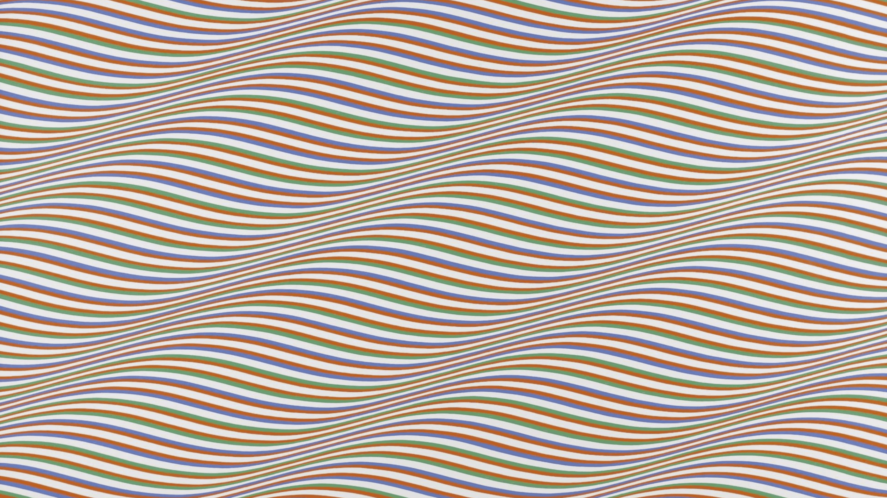
Бріджит Райлі, відома британська художниця, була рушійною силою руху оп-арту 1960-х років. Її робота містить геометричні візерунки, які кидають виклик сприйняттю глядача та викликають відчуття руху чи вібрації. Її твір «Гала» 1974 року демонструє серію криволінійних форм, які хвилюються по полотну, викликаючи природний ритм синусоїди.
У Розділі 1 і Розділі 2 я ретельно опрацював об’єктно-орієнтовану структуру для анімації фігури на полотні p5.js, використовуючи вектор для представлення положення, швидкості та прискорення, керованих силами середовища. Я міг би відразу перейти до таких тем, як системи частинок, керівні сили, групова поведінка тощо. Проте це означало б пропустити фундаментальний аспект руху в природному світі: коливання (осциляцію), або рух об’єкта вперед і назад навколо центральної точки чи положення.
Щоб моделювати коливання, потрібно трохи розуміти тригонометрію — математику трикутників. Її вивчення дасть вам нові інструменти для створення візерунків і нових поведінок руху в програмах p5.js. Ви навчитеся використовувати кутову швидкість і прискорення, щоб обертати об’єкти під час їхнього руху. Ви зможете застосовувати функції синуса та косинуса для моделювання приємних хвильових патернів із плавним прискоренням і сповільненням. Ви також навчитеся обчислювати складніші сили в ситуаціях, де задіяні кути, як-от коливання маятника або ковзання коробки по похилій площині.
Я почну з основ роботи з кутами у p5.js, а потім розгляну кілька аспектів тригонометрії. Наприкінці я поєднаю тригонометрію з тим, що ви дізналися про сили у Розділі 2. Матеріал цього розділу прокладе шлях до складніших прикладів у наступних розділах книги.
Кути

Перш ніж продовжувати, мені потрібно переконатися, що ви розумієте, як концепція кута узгоджується з творчим кодуванням у p5.js. Якщо у вас є досвід роботи з p5.js, ви безперечно стикалися з цим питанням під час використання функції rotate() для обертання та розкручування об’єктів. Найімовірніше, ви знайомі з поняттям кута, що вимірюється у градусах (див. рисунок 3.1).

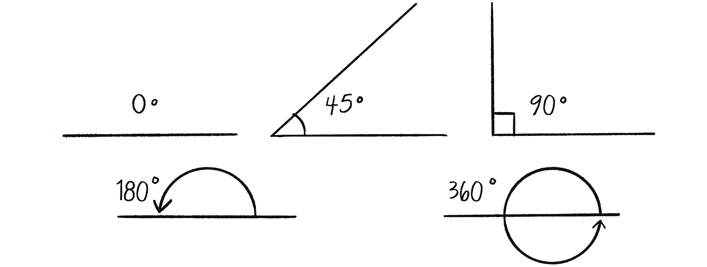

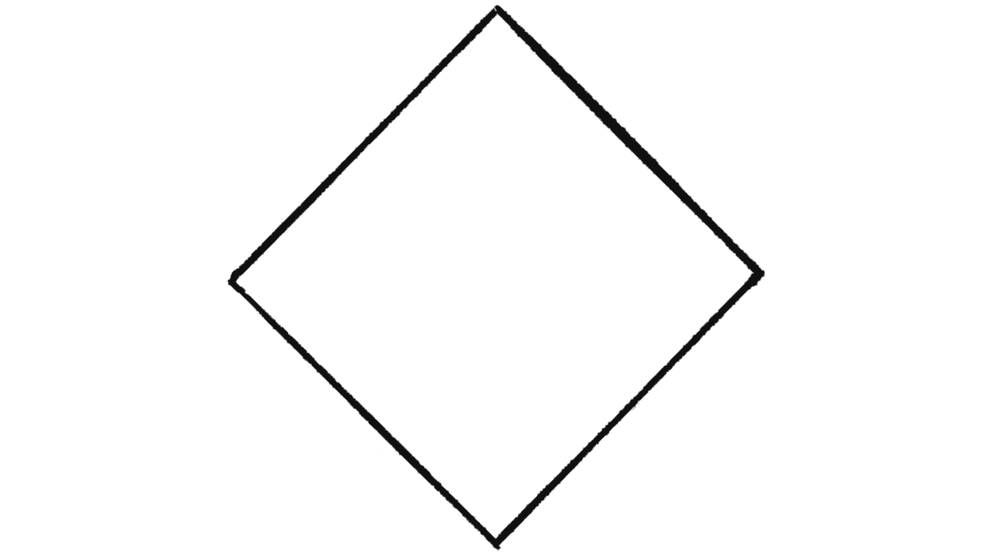
Повний оберт відбувається від 0 до 360 градусів, а 90 градусів (прямий кут) становить одну четверту від 360, що зображено на рисунку 3.1 двома перпендикулярними лініями.
У комп’ютерній графіці кути зазвичай використовуються для вказівки повороту фігури. Наприклад, квадрат на рисунку 3.2 повернуто на 45 градусів навколо свого центру.

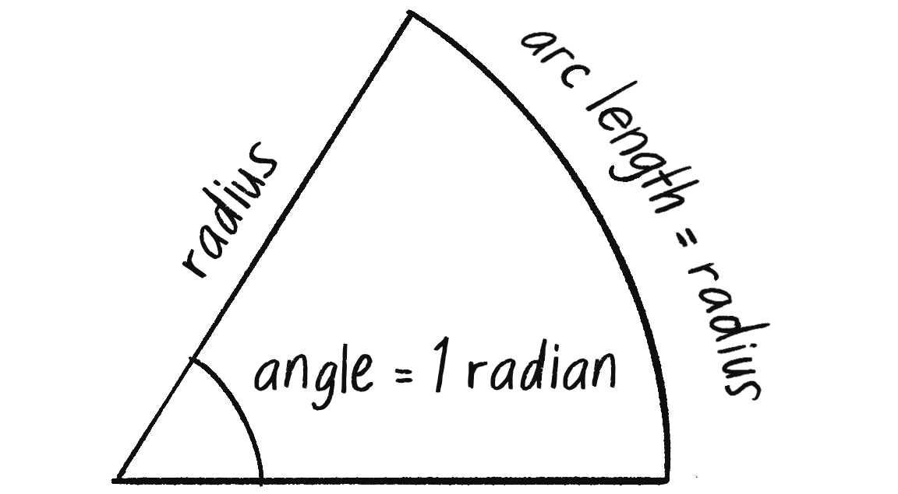
Річ у тім, що типово p5.js вимірює кути не в градусах, а в радіанах. Ця альтернативна одиниця вимірювання визначається як відношення довжини дуги кола (сегмента довжини кола) до його радіуса. Один радіан — це кут, за якого це відношення дорівнює 1 (див. рисунок 3.3). Повне коло (360 градусів) становить радіана, 180 градусів дорівнює радіану, а 90 градусів — радіана.
Формула для переведення градусів у радіани:
На щастя, якщо ви віддаєте перевагу кутам у градусах, то можете ввімкнути відповідний режим, викликавши функцію angleMode(DEGREES), або використовувати зручну функцію radians() для перетворення значень із градусів у радіани. Також доступні вбудовані константи PI, TWO_PI та HALF_PI (еквівалентні 180, 360 та 90 градусам відповідно). Наприклад, ось два способи повернути фігуру на 60 градусів у p5.js:
let angle = 60;
rotate(radians(angle));
angleMode(DEGREES);
rotate(angle);
Що таке Пі?
Математична константа пі, яку позначають грецькою літерою , — це дійсне число, визначене як відношення довжини кола (периметру кола) до його діаметра (прямої лінії, що проходить через центр кола). Воно дорівнює приблизно 3.14159 і доступне у p5.js через вбудовану константу PI.
Хоча градуси можуть бути корисними, у цій книзі я працюватиму з радіанами, оскільки вони є стандартною одиницею вимірювання в багатьох мовах програмування та графічних середовищах. Якщо вони для вас нові, це чудова нагода попрактикуватися! Крім того, якщо ви ще не знайомі з тим, як реалізовано обертання у p5.js, я рекомендую переглянути мою серію відео на Coding Train про трансформації у p5.js.
Вправа 3.1
Налаштуйте обертання об’єкта, схожого на кийок, навколо його центру за допомогою функцій translate() і rotate().
Кутовий рух

Іншим терміном для обертання є кутовий рух — тобто рух навколо кута. Подібно до того, як лінійний рух можна описати через швидкість — темп, із яким змінюється положення об’єкта в часі, — кутовий рух можна описати через кутову швидкість, як темпу, із яким змінюється кут об’єкта в часі. За аналогією, кутове прискорення описує зміну кутової швидкості об’єкта.
На щастя, ви вже маєте всю потрібну математику, щоб зрозуміти кутовий рух. Пам’ятаєте матеріал, поясненню якого я присвятив майже всі Розділ 1 і Розділ 2?
Ви можете застосувати ту саму логіку до об’єкта, що обертається:
Насправді ці формули кутового руху простіші за їхні еквіваленти лінійного руху, оскільки кут тут є скалярною величиною (одним числом), а не вектором! Це тому, що у 2D-просторі є лише одна вісь обертання, а у 3D-просторі кут став би вектором. (Зверніть увагу: здебільшого ці формули містять множення на зміну часу, яку називають дельта-часом (delta time). Я припускаю, що дельта-час дорівнює 1, що відповідає одному кадру анімації у p5.js.)
Використовуючи відповідь із вправи 3.1, припустімо, що ви захотіли повернути кийок у p5.js на певний кут. Спочатку код міг би виглядати так:
translate(width / 2, height / 2);
rotate(angle);
line(-60, 0, 60, 0);
circle(60, 0, 16);
circle(-60, 0, 16);
angle = angle + 0.1;
Додавши принципи кутового руху, я можу натомість написати наступний приклад (розв’язок вправи 3.1).
let angle = 0;
Кут
let angleVelocity = 0;
Швидкість
let angleAcceleration = 0.0001;
Прискорення
function setup() {
createCanvas(640, 240);
}
function draw() {
background(255);
translate(width / 2, height / 2);
rotate(angle);
Обертання відповідно до кута
stroke(0);
fill(127);
line(-60, 0, 60, 0);
circle(60, 0, 16);
circle(-60, 0, 16);
angleVelocity += angleAcceleration;
Кутовий еквівалент для velocity.add(acceleration)
angle += angleVelocity;
Кутовий еквівалент для position.add(velocity)
}
Замість того щоб збільшувати значення angle на сталу величину для рівномірного обертання кийка, у кожному кадрі я додаю angleAcceleration до angleVelocity, а потім angleVelocity до angle. У результаті кийок починає рух без обертання, а потім крутиться дедалі швидше разом із наростанням кутової швидкості.
Вправа 3.2
Додайте взаємодію з кийком, що обертається. Як ви можете керувати прискоренням за допомогою миші? Чи можете ви додати силу опору або тертя, що зменшуватиме кутову швидкість із часом, аби кийок зрештою зупинився?
Наступний логічний крок — інтегрувати ідею кутового руху до класу Mover. Спершу мені потрібно додати кілька змінних до конструктора класу:
class Mover {
constructor() {
this.position = createVector();
this.velocity = createVector();
this.acceleration = createVector();
this.mass = 1.0;
this.angle = 0;
this.angleVelocity = 0;
this.angleAcceleration = 0;
Змінні для кутового руху.
}
Потім у методі update() положення та кут об’єкта оновлюються відповідно до алгоритму, який я щойно показав:
update() {
this.velocity.add(this.acceleration);
this.position.add(this.velocity);
Звичайний прямолінійний рух.
this.angleVelocity += this.angleAcceleration;
this.angle += this.angleVelocity;
Новий кутовий рух.
this.acceleration.mult(0);
}
Звісно, щоб усе це мало значення, мені також потрібно обертати об’єкт під час його малювання в методі show(). Щоб обертання було помітним, я додам лінію від центру до краю круга. Ви також можете намалювати об’єкт іншої форми:
show() {
stroke(0);
fill(175, 200);
push();
Функція push() зберігає поточний стан системи координат, щоб після його відновлення, за допомогою функції pop(), обертання поточного об’єкта не впливало на решту фігур.
translate(this.position.x, this.position.y);
Перенесення початку координат у положення фігури.
rotate(this.angle);
Застосування обертання на заданий кут.
circle(0, 0, this.radius * 2);
line(0, 0, this.radius, 0);
pop();
Виклик функції pop() відновлює попередній стан полотна, повертаючи початок координат у його вихідне положення.
}
На цьому етапі, якщо ви дійсно створите об’єкт Mover, то не побачите особливих змін у його поведінці. Це тому, що кутове прискорення ініціалізоване нулем (this.angleAcceleration = 0;). Щоб об’єкт обертався, йому потрібне ненульове прискорення! Звісно, найпростіший варіант — задати бажане фіксоване число безпосередньо в конструкторі:
this.angleAcceleration = 0.01;
Проте ви можете отримати значно цікавіший результат, динамічно обчислюючи кутове прискорення в методі update() відповідно до сил у середовищі. Це могло б стати приводом заглибитися у фізику кутового прискорення на основі понять моменту сили (torque) та моменту інерції (moment of inertia), але на цьому етапі такий рівень моделювання завів би нас надто далеко. Докладніше моделювання кутового прискорення на прикладі маятника я розгляну в підрозділі «Маятник», а також покажу, як сторонні фізичні бібліотеки реалістично моделюють обертальний рух у Розділі 6.
Натомість для отримання творчих результатів цілком достатньо швидкого й спрощеного рішення. Розумним підходом є обчислення кутового прискорення як функції лінійного прискорення об’єкта — темпу зміни його швидкості вздовж вектора руху, на відміну від обертання. Ось приклад:
this.angleAcceleration = this.acceleration.x;
Використання x-компоненти лінійного прискорення для обчислення кутового прискорення.
Так, це дещо довільно, проте це щось робить. Якщо об’єкт прискорюється вправо, його кутове обертання прискорюється за годинниковою стрілкою. Прискорення вліво спричиняє обертання проти годинникової стрілки. Звісно, тут важливо зважати на масштаб. Значення x-компоненти вектора прискорення може бути завеликим, через що об’єкт крутитиметься надто швидко й нереалістично. Ви навіть можете помітити оптичну ілюзію, відому як стробоскопічний ефект («ефект колісниці», або wagon wheel effect), коли через великі зміни між кожним кадром анімації здається, що об’єкт обертається повільніше або навіть у протилежному напрямку.
Ділення x-компоненти на певний коефіцієнт або обмеження кутової швидкості з розумним діапазоном дійсно допомагає. Нижче наведено весь метод update() із цими вдосконаленнями.
update() {
this.velocity.add(this.acceleration);
this.position.add(this.velocity);
this.angleAcceleration = this.acceleration.x / 10.0;
Обчислення кутового прискорення за x-компонентою прискорення.
this.angleVelocity += this.angleAcceleration;
this.angleVelocity = constrain(this.angleVelocity, -0.1, 0.1);
Використовуємо функцію constrain(), щоб кутова швидкість не зростала безконтрольно.
this.angle += this.angleVelocity;
this.acceleration.mult(0);
}
Зверніть увагу, що я використав кілька прийомів, щоб запобігти безконтрольному розкручуванню об’єкта. Спочатку я ділю acceleration.x на 10 перед присвоєнням значення змінній angleAcceleration. Потім, для надійності, також застосовую функцію constrain(), щоб обмежити angleVelocity діапазоном (-0.1, 0.1).
Вправа 3.3
Крок 1: Створіть симуляцію об’єктів, якими вистрілюють із гармати. Кожен об’єкт має зазнати імпульсу раптової сили під час пострілу (лише один раз), а також перебувати під дією гравітації (присутня постійно).
Крок 2: Додайте об’єкту обертання, щоб змоделювати його закручування після пострілу з гармати. Наскільки реалістичного вигляду вам вдасться досягти?
Тригонометричні функції
Гадаю, я готовий розкрити секрет тригонометрії. Я говорив про кути й крутив кийки. Тепер настав час для … зачекайте-зачекайте … sohcahtoa. Так, для sohcahtoa! Це, здавалося б, безглузде слово насправді є основою для багатьох робіт із комп’ютерної графіки. Базове розуміння тригонометрії необхідне, якщо ви хочете обчислювати кути, знаходити відстані між точками та працювати з кругами, дугами чи лініями. А sohcahtoa — це мнемонічне правило (хоч і дещо чудернацьке) для запам’ятовування значень тригонометричних функцій: синуса, косинуса та тангенса. Воно посилається на сторони прямокутного трикутника, як показано на рисунку 3.4.

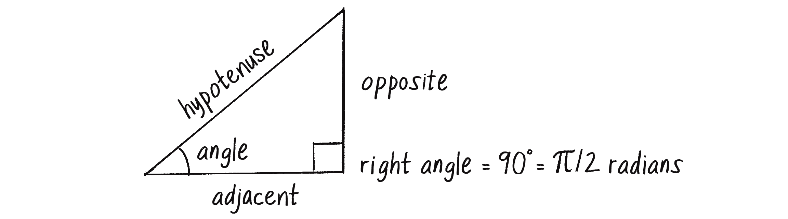
Візьміть один із гострих кутів прямокутного трикутника. Прилегла (adjacent) сторона — та, що прилягає до цього кута, протилежна (opposite) — та, що лежить навпроти нього, а гіпотенуза (hypotenuse) — сторона, протилежна прямому куту. Sohcahtoa підказує, як обчислити тригонометричні функції кута через довжини цих сторін. Це мнемонічне скорочення побудоване з перших літер англійських слів як показано нижче:
- soh:
- cah:
- toa:
Погляньте на рисунок 3.4 ще раз. Вам не потрібно завчати його напам’ять, але переконайтеся, що ви добре його розумієте. Спробуйте перемалювати його власноруч. Далі погляньмо на це дещо під іншим кутом (див. рисунок 3.5).

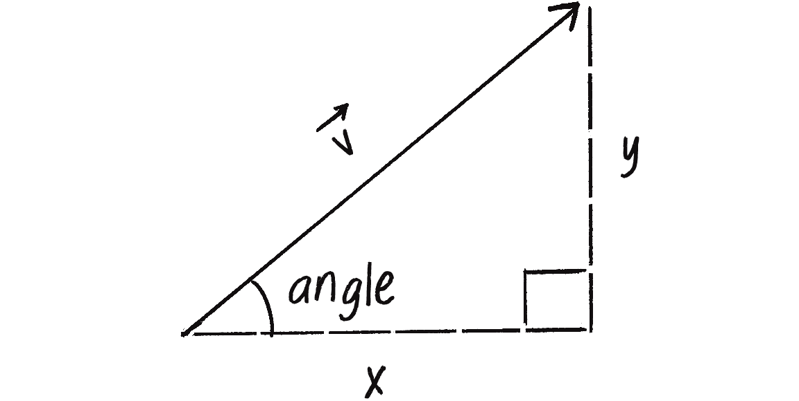
Бачите, як із вектора створюється прямокутний трикутник? Стрілка вектора є гіпотенузою, а компоненти вектора ( і ) — сторонами трикутника. Кут є додатковим способом задання напрямку вектора (або його орієнтації, heading). У такому вигляді тригонометричні функції проявляють взаємозв’язок між компонентами вектора та його напрямком і магнітудою. Завдяки цьому тригонометрія буде надзвичайно корисною в усій книзі. Щоб проілюструвати це, розглянемо приклад, де необхідна функція тангенса.
Спрямування за напрямком руху

Згадайте приклад 1.10, у якому показано, як об’єкт Mover прискорюється в напрямку курсора (рисунок 3.6).
Ви могли помітити, що майже всі фігури, які я малював досі, були кругами. Це зручно з кількох причин, одна з яких полягає в тому, що це круги дозволяють уникнути питання обертання. Поверніть круг і він виглядатиме абсолютно так само. Проте в житті кожного розробника графіки та анімації настає мить, коли потрібно переміщати на екрані щось не кругле. Можливо, це мураха, автомобіль або космічний корабель. Щоб виглядати реалістично, такий об’єкт має бути спрямованим у напрямку свого руху.
Коли я кажу «спрямувати за напрямком руху», я насправді маю на увазі «повернути відповідно до вектора швидкості». Швидкість — це вектор із - та -компонентами, але для обертання у p5.js потрібне одне число — кут. Погляньмо на тригонометричну схему ще раз, тепер зосередившись на векторі швидкості об’єкта (рисунок 3.7).

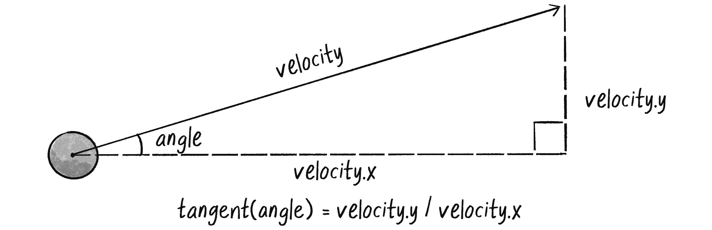
Компоненти вектора швидкості і пов’язані з його кутом через функцію тангенса. За правилом toa з sohcahtoa, це співвідношення записується наступним чином:
Проблема в тому, що хоча ми знаємо компоненти вектора швидкості та , нам невідомий сам кут його напрямку. Нам потрібно обчислити цей кут. Тут у пригоді стає інша функція, відома як обернений тангенс, або арктангенс (скорочено позначається як arctan або atan). Існують також обернений синус (арксинус, або arcsin) та обернений косинус (арккосинус, або arccos).
Якщо тангенс певного значення дорівнює значенню , то обернений тангенс від дорівнює . Наприклад:
| Якщо | |
| Тоді |
Бачите, як одне є оберненим до іншого? Це дає змогу визначити кут вектора:
| Якщо | |
| Тоді |
Тепер, коли у нас є формула, подивімося, як її застосувати в методі show() класу Mover, щоб об’єкт (тепер намальований у вигляді прямокутника) орієнтувався за напрямком свого руху. Зверніть увагу: у p5.js функція оберненого тангенса називається atan():
show() {
let angle = atan(this.velocity.y / this.velocity.x);
Знаходження кута за допомогою функції atan().
stroke(0);
fill(175);
push();
rectMode(CENTER);
translate(this.position.x, this.position.y);
rotate(angle);
Обертання відповідно до потрібного кута.
rect(0, 0, 30, 10);
pop();
}

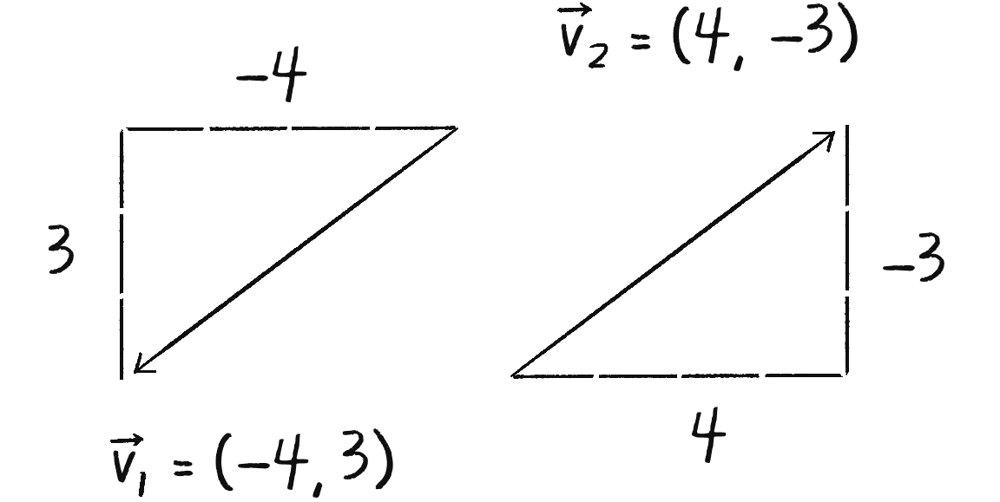
Цей код практично готовий і майже робочий. Однак є велика проблема. Розгляньмо два вектори швидкості, зображені на рисунку 3.8.
Хоч вони й схожі на перший погляд, обидва вектори вказують у зовсім різних напрямках — ба більше, у протилежних! Попри це, подивіться, що станеться, якщо я застосую формулу арктангенса для обчислення кута кожного вектора:
Я отримую однаковий кут! Але це не може бути правильним, адже вектори спрямовані у протилежні боки. Виявляється, що це досить поширена проблема в комп’ютерній графіці. Я міг би використати функцію atan() разом з умовними операторами, щоб врахувати додатні й від’ємні випадки, проте p5.js (як і більшість середовищ програмування) має корисну функцію atan2(), яка розв’язує цю проблему за мене.
let angle = atan2(this.velocity.y, this.velocity.x);
Використання atan2() для врахування всіх можливих напрямків.
push();
rectMode(CENTER);
translate(this.position.x, this.position.y);
rotate(angle);
Обертання відповідно до потрібного кута.
rect(0, 0, 30, 10);
pop();
}
Щоб спростити це ще більше, клас p5.Vector надає метод heading(), який сам викликає atan2() і повертає кут напрямку у 2D-просторі (в радіанах) для будь-якого об’єкта p5.Vector:
let angle = this.velocity.heading();
Найпростіший спосіб зробити це!
З методом heading() виявляється, що вам насправді не потрібно реалізовувати тригонометричні функції у власному коді, однак розуміти, як усе це працює, однаково корисно.
Вправа 3.4
Створіть симуляцію автомобіля, яким можна керувати за допомогою клавіш зі стрілками: стрілка вліво прискорює автомобіль ліворуч, а стрілка вправо — праворуч. Автомобіль повинен бути розвернутий у напрямку свого поточного руху.
Полярні та декартові координати

Щоразу, коли ви малюєте фігуру в p5.js, вам потрібно вказати її піксельне положення — набір координат та . Вони відомі як декартові координати, названі на честь Рене Декарта, французького математика, який розробив ідеї прямокутної системи координат.
Інша корисна система координат — полярні координати — описує точку в просторі як відстань від початку координат (як радіус кола) та кут обертання навколо початку координат (зазвичай позначається грецькою літерою тета, ). Якщо мислити категоріями векторів, декартові координати описують - та -компоненти вектора, тоді як полярні координати описують магнітуду (величину, довжину) вектора та його напрямок (кут).
Працюючи в p5.js, вам може бути зручніше мислити в полярних координатах, особливо під час створення програм, що містять обертальні або кругові рухи. Проте функції малювання p5.js розуміють лише декартові координати (, ). На щастя, саме тригонометрія дає ключ до перетворення між полярними та декартовими координатами (див. рисунок 3.9). Це дозволяє проєктувати симуляцію в будь-якій зручній для вас системі координат, завжди малюючи з використанням декартових координат.

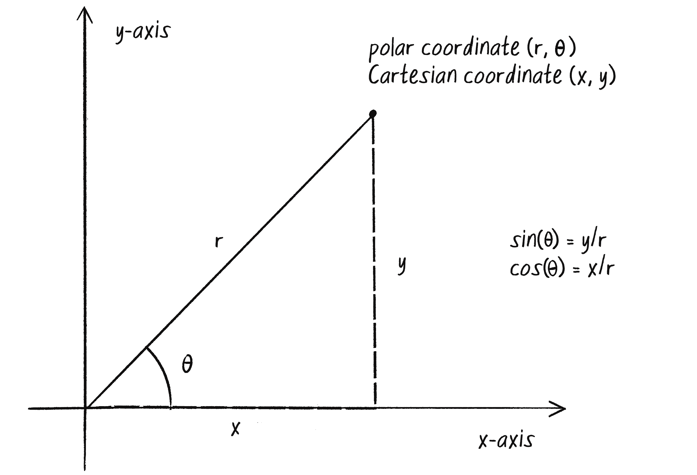
theta як назву для змінної, що відповідає за кутНаприклад, якщо задані полярні координати з радіусом 75 пікселів і кутом () 45 градусів (або радіан), то декартові та можна обчислити так:
Для обчислення синуса і косинуса у p5.js є відповідні функції sin() та cos(). Кожна з них приймає один аргумент — число, що представляє кут у радіанах. Ці формули можна записати наступним чином:
let r = 75;
let theta = PI / 4;
let x = r * cos(theta);
let y = r * sin(theta);
Перетворення з полярних координат (r, theta) на декартові (x, y).
Таке перетворення буває корисним у багатьох задачах. Наприклад, рухати фігуру круговою траєкторією за допомогою декартових координат не так просто. Проте з полярними координатами це елементарно: просто збільшуйте кут! Наступний приклад показує, як це зробити за допомогою глобальних змінних r і theta.
let r;
let theta;
function setup() {
createCanvas(640, 240);
r = height * 0.45;
theta = 0;
Ініціалізація значень.
}
function draw() {
background(255);
translate(width / 2, height / 2);
Перенесення початку координат у центр екрана.
let x = r * cos(theta);
let y = r * sin(theta);
Полярні координати (r, theta) перетворюються на декартові (x, y) для використання у функції circle().
fill(127);
stroke(0);
line(0, 0, x, y);
circle(x, y, 48);
theta += 0.02;
Поступове збільшення кута з плином часу.
}
Перетворення з полярних координат у декартові настільки поширене, що p5.js містить зручну функцію, яка бере це на себе. Вона реалізована як статичний метод класу p5.Vector під назвою fromAngle(). Метод приймає кут у радіанах і створює одиничний вектор у декартовому просторі, який вказує в напрямку цього кута. Ось як це виглядало б у прикладі 3.4:
let position = p5.Vector.fromAngle(theta);
Створення одиничного вектора, що вказує в напрямку кута.
position.mult(r);
Щоб завершити перетворення з полярних координат на декартові, масштабуємо position на r.
circle(position.x, position.y, 48);
Малювання круга з використанням x- та y-компонентів вектора.
Ви вже вражені? Я продемонстрував чудові способи застосування тангенса (для знаходження кута вектора) та синуса й косинуса (для перетворення полярних координат на декартові). Я міг би зупинитися просто тут і бути задоволеним. Але я цього не зроблю. Це лише початок. Як я покажу далі, можливості синуса й косинуса виходять далеко за межі математичних формул та прямокутних трикутників.
Вправа 3.5
Взявши за основу приклад 3.4, намалюйте спіральну траєкторію. Почніть із центру й рухайтеся назовні. Зверніть увагу: це можна зробити, змінивши лише один рядок коду та додавши ще один!
Вправа 3.6
Створіть симуляцію космічного корабля з гри «Астероїди». Якщо ви не знайомі з цією грою, ось короткий опис: космічний корабель (тут зображений трикутником) ширяє у 2D-просторі. Клавіша зі стрілкою вліво повертає корабель проти годинникової стрілки, а клавіша вправо — за годинниковою стрілкою. Клавіша Z застосовує силу тяги в напрямку, куди дивиться корабель.
Властивості коливань

Подивіться на графік функції синуса на рисунку 3.10, де .

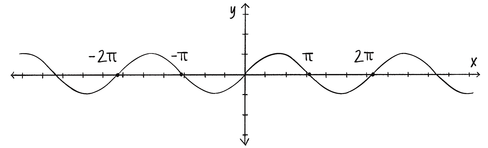
Результат функції синуса — це гладка крива, що почергово коливається між і , відома також як синусоїдальна хвиля або синусоїда. Така поведінка, з періодичним рухом між двома точками і є тим коливанням (осциляцією), про яке я згадував на початку розділу. Коливання гітарної струни, гойдання маятника, стрибки на пого-палиці — все це приклади коливального руху, які можна змоделювати за допомогою функції синуса.
У програмі p5.js ви можете симулювати коливання, присвоюючи вихідне значення функції синуса положенню об’єкта. Я почну з базового сценарію: хочу, щоб круг коливався між лівим і правим краями полотна (рисунок 3.11).
Цей патерн коливання вперед і назад навколо центральної точки відомий як простий гармонічний рух (або, кажучи бльіш вишукано, періодичні синусоїдальні коливання об’єкта). Код для його реалізації напрочуд простий, проте перш ніж перейти до нього, я хотів би ввести кілька ключових термінів, пов’язаних із коливаннями (і хвилями).
Коли рухомий об’єкт демонструє простий гармонічний рух, його положення (у цьому разі координату ) можна виразити як функцію часу за допомогою таких двох параметрів:
- Амплітуда — відстань від центра руху до будь-якої з крайніх точок
- Період — тривалість (час) одного повного циклу руху
Щоб зрозуміти ці терміни, погляньте ще раз на графік функції синуса на рисунку 3.10. Крива ніколи не підіймається вище 1 і не опускається нижче -1 вздовж осі , тому амплітуда функції синуса дорівнює 1. Водночас хвилеподібний патерн повторюється кожні одиниць уздовж осі , отже, період функції синуса становить . За домовленістю одиницями вимірювання тут є радіани, оскільки аргументом функції синуса зазвичай є кут, виміряний у радіанах.
Це все про амплітуду й період абстрактної функції синуса. Але чим є амплітуда й період у світі p5.js для круга, що коливається? Амплітуду досить легко виміряти в пікселях. Наприклад, якщо полотно має ширину 200 пікселів, я можу вибрати коливання навколо центра полотна: на 100 пікселів праворуч від центра і на 100 пікселів ліворуч. Іншими словами, амплітуда становитиме 100 пікселів:
let amplitude = 100;
Амплітуда вимірюється в пікселях.
Період — це проміжок часу, потрібний для одного повного циклу коливання. Проте що означає час у програмі p5.js? Теоретично я міг би сказати, що хочу, аби круг коливався щотри секунди, а потім придумати хитромудрий алгоритм для переміщення об’єкта за реальним часом за допомогою функції millis() для відстеження пройдених мілісекунд. Але для нашої мети реальний час не потрібен. Набагато зручнішою мірою часу в p5.js є кількість кадрів, що минули з початку запуску програми, яка доступна через вбудовану змінну frameCount. Чи хочу я, щоб коливальний рух повторювався кожні 30 кадрів? Кожні 50 кадрів? Як щодо періоду у 120 кадрів:
let period = 120;
Період вимірюється в кадрах (одиницях часу для анімації).
Маючи амплітуду й період, можна скласти формулу для обчислення координати круга як функції часу (поточної кількості кадрів):
let x = amplitude * sin(TWO_PI * frameCount / period);
amplitude та period — це мої власні змінні, а frameCount — вбудована змінна у p5.js.
Поміркуймо, що тут відбувається. По-перше, будь-яке значення, повернуте функцією sin(), множиться на amplitude. Як видно на рисунку 3.10, вихідне значення синуса коливається від -1 до 1. Помноживши його на вибрану амплітуду (назвемо її ), отримаємо бажаний результат: значення, яке коливається між - та . (Тут також можна використати функцію p5.js map(), щоб відобразити вихідні значення функції sin() у довільний діапазон.)
Тепер зверніть увагу на вираз усередині функції sin():
TWO_PI * frameCount / period
Що тут відбувається? Почнімо з того, що вам уже відомо. Я пояснив, що синус має період , тобто він починається з і повторюється при , , і так далі. Якщо бажаний період коливання становить 120 кадрів, тоді я хочу, щоб круг опинявся в тому самому положенні, коли frameCount сягає 120, 240, 360 і так далі. Тут frameCount — єдине значення, що змінюється з плином часу: воно починається з 0 і щокадру зростає. Подивімося, що дає ця формула зі збільшенням frameCount:
frameCount | frameCount / period | TWO_PI * frameCount / period |
|---|---|---|
| 0 | 0 | 0 |
| 60 | 0.5 | |
| 120 | 1 | |
| 240 | 2 | |
| . . . | . . . | . . . |
Ділення frameCount на period показує, скільки циклів уже завершилося. Чи пройшла хвиля половину першого циклу? Чи завершилися два цикли? Помноживши це число на TWO_PI, я отримую бажане значення — належний аргумент для функції sin(), оскільки саме TWO_PI потрібне для завершення одного повного циклу синуса (або косинуса).
Об’єднавши все разом, отримуємо приклад, де координата x круга коливається з амплітудою 100 пікселів і періодом 120 кадрів.
function setup() {
createCanvas(640, 240);
}
function draw() {
background(255);
let period = 120;
let amplitude = 200;
let x = amplitude * sin(TWO_PI * frameCount / period);
Обчислення горизонтального положення за формулою простого гармонічного руху.
stroke(0);
fill(127);
translate(width / 2, height / 2);
line(0, 0, x, 0);
circle(x, 0, 48);
}
Перш ніж рухатися далі, не можна не згадати про частоту — кількість циклів коливання за одиницю часу. Частота є оберненою величиною до періоду — тобто 1, поділена на період. Наприклад, якщо період дорівнює 120 кадрам, за 1 кадр проходить лише 1/120 циклу, тож частота становить 1/120. У прикладі 3.5 я вирішив визначити швидкість коливання через період, тому змінна для частоти була непотрібна. Проте іноді більш корисно мислити з точки зору частоти, а не періоду.
Вправа 3.7
За допомогою функції синуса створіть симуляцію тягарця (який в англомовних джерелах часто називають bob), що висить на пружині, закріпленій у верхній частині полотна. Скористайтеся функцією map() для обчислення вертикального положення тягарця. У підрозділі «Сила пружності» я покажу, як створити цю саму симуляцію за допомогою моделювання сил пружини за законом Гука.
Коливання з кутовою швидкістю
Розуміння коливань, амплітуди й періоду (або частоти) може бути важливим під час моделювання явищ реального світу. Проте існує трохи простіший спосіб реалізувати простий гармонічний рух із прикладу 3.5, який досягає того самого результату з меншою кількістю змінних. Погляньмо ще раз на формулу коливання:
let x = amplitude * sin(TWO_PI * frameCount / period);
Тепер я перепишу її трохи інакше:
let x = amplitude * sin( якесь значення, що повільно зростає );
Якщо вам важливо точно задати період коливань у кадрах анімації, може знадобитися перша формула. Проте якщо точний період не має значення (наприклад, якщо ви обираєте його випадково), усе, що насправді потрібно всередині функції sin(), — це значення, яке зростає досить повільно, щоб рух об’єкта виглядав плавним від кадру до кадру. Щоразу, коли це значення долає кратне , об’єкт завершує один повний цикл коливання.
Цей прийом нагадує те, що я робив із шумом Перліна у розділі 0. Там я збільшував змінну зсуву (яку називав t або xoff), щоб вибирати значення з функції noise(), створюючи плавний перехід між ними. Тепер я так само збільшуватиму значення (назву його angle), яке передається у функцію sin(). Різниця полягає в тому, що результат sin() — це плавно повторювана синусоїда без жодної випадковості.
Вам може бути цікаво, чому я називаю змінну, що зростає, саме angle, якщо об’єкт помітно не обертається. Слово кут використовується тому, що це значення передається у функцію sin(), а кути є традиційними аргументами тригонометричних функцій. Зважаючи на це, я можу знову використати поняття кутової швидкості (та прискорення), щоб переписати приклад для обчислення положення x через зміну кута. Припустимо, що в нас є такі глобальні змінні:
let angle = 0;
let angleVelocity = 0.05;
Потім я можу написати таке:
function draw() {
angle += angleVelocity;
let x = amplitude * sin(angle);
}
Тут angle — це моє «значення, що повільно зростає», а величина його повільного збільшення — це angleVelocity.
let angle = 0;
let angleVelocity = 0.05;
function setup() {
createCanvas(640, 240);
}
function draw() {
background(255);
let amplitude = 200;
let x = amplitude * sin(angle);
angle += angleVelocity;
Використання концепції кутової швидкості для збільшення змінної кута.
translate(width / 2, height / 2);
stroke(0);
fill(127);
line(0, 0, x, 0);
circle(x, 0, 48);
}
Те, що я не посилаюся на період безпосередньо, не означає, що я відмовився від цієї концепції. Зрештою, що більша кутова швидкість, то швидше коливатиметься круг (і відповідно коротшим буде період). Насправді період — це кількість кадрів, потрібних для того, щоб angle збільшився на . Оскільки крок збільшення angle визначається кутовою швидкістю, період можна обчислити таким чином:
Щоб проілюструвати всю силу підходу до коливань через кутову швидкість, я розширю цей приклад, створивши клас Oscillator, чиї об’єкти зможуть коливатися незалежно як уздовж осі (як раніше), так і уздовж осі . Класу знадобляться два кути, дві кутові швидкості та дві амплітуди, по одній для кожної осі.
Це чудова нагода скористатися функцією createVector(), щоб об’єднати кожну пару значень! На відміну від попередніх прикладів із векторами, значення тут не будуть наборами декартових координат у просторі. Проте клас p5.Vector дає зручний спосіб керувати парами значень — у цьому випадку парами кутів і відповідними швидкостями, прискореннями тощо.
class Oscillator {
constructor() {
this.angle = createVector();
Використання p5.Vector для відстеження двох кутів!
this.angleVelocity = createVector(random(-0.05, 0.05), random(-0.05, 0.05));
this.amplitude = createVector(random(20, width / 2), random(20, height / 2));
Випадкові швидкості та амплітуди.
}
update() {
this.angle.add(this.angleVelocity);
}
show() {
let x = sin(this.angle.x) * this.amplitude.x;
Коливання вздовж осі x.
let y = sin(this.angle.y) * this.amplitude.y;
Коливання вздовж осі y.
push();
translate(width / 2, height / 2);
stroke(0);
fill(127);
line(0, 0, x, y);
circle(x, y, 32);
pop();
Малювання осцилятора у вигляді лінії, що сполучає круг.
}
}
Щоб краще зрозуміти клас Oscillator, корисно зосередитися на русі одного осцилятора в анімації. Спершу поспостерігайте за його горизонтальним рухом. Ви помітите, що він регулярно коливається вперед і назад уздовж осі . Перемкнувши увагу на його вертикальний рух, ви побачите коливання вгору й вниз уздовж осі . Кожен осцилятор має власний чіткий ритм завдяки випадковій ініціалізації кута, кутової швидкості та амплітуди.
Головне — зрозуміти, що властивості x та y об’єктів p5.Vector (this.angle, this.angleVelocity та this.amplitude) більше не прив’язані до просторових векторів. Натомість вони зберігають відповідні параметри двох окремих коливань (одного вздовж осі , іншого вздовж осі ). Зрештою ці коливання проявляються просторово, коли x та y обчислюються в методі show(), переносячи коливання на координати положення об’єкта.
Вправа 3.8
Спробуйте ініціалізувати кожен об’єкт Oscillator швидкостями й амплітудами, які не є випадковими, щоб створити впорядкований регулярний патерн. Чи вдасться вам зробити так, щоб осцилятори нагадували рух лапок комахоподібної істоти?
Вправа 3.9
Додайте кутове прискорення до об’єкта Oscillator.
Хвилі

Уявіть один круг, який коливається вгору й вниз за законом функції синуса. Це еквівалентно симуляції однієї точки вздовж осі синусоїди. Додавши трохи винахідливості й цикл for, ви можете анімувати всю хвилю, розмістивши цілу серію таких коливальних кругів один біля одного (рисунок 3.12).
Ви можете використовувати цей хвилястий патерн для створення тіла чи кінцівок істоти або для імітації м’якої поверхні, наприклад, води. Розгляньмо, як працює код для цієї програми.
Тут діють ті самі концепції амплітуди (висоти хвилі) та періоду (тривалості хвилі). Однак під час малювання всієї хвилі термін період змінює свій зміст і замість представлення часу він описує ширину (у пікселях) повного періоду хвилі. Для просторового періоду хвилі (на відміну від часового) існує термін довжина хвилі — відстань, яка потрібна хвилі для завершення одного повного циклу коливань. І так само, як у попередньому прикладі коливань, ви можете обчислювати хвилеподібний патерн за точною довжиною хвилі або просто довільно збільшувати значення кута (дельта кута) для кожної точки на хвилі.
Я оберу простіший варіант зі збільшенням кута. Мені потрібні три змінні: кут, дельта кута (аналог попередньої кутової швидкості) та амплітуда:
let angle = 0;
let deltaAngle = 0.2;
let amplitude = 100;
Потім я збираюся обійти всі x-координати для кожної точки на хвилі. Наразі я додаватиму по 24 пікселі між сусідніми x-значеннями. Для кожного x я виконаю такі три кроки:
- Обчислення -позиції відповідно до амплітуди й синуса кута.
- Малювання круга в точці з координатами .
- Збільшення кута відповідно до дельти кута.
У наступному прикладі ці кроки втілено в коді.
let angle = 0;
let deltaAngle = 0.2;
let amplitude = 100;
function setup() {
createCanvas(640, 240);
background(255);
stroke(0);
fill(127, 127);
for (let x = 0; x <= width; x += 24) {
let y = amplitude * sin(angle);
Крок 1: обчислення y-позиції відповідно до амплітуди й синуса кута.
circle(x, y + height / 2, 48);
Крок 2: малювання круга у точці за координатами (x, y).
angle += deltaAngle;
Крок 3: збільшення кута відповідно до дельти кута.
}
}
Що станеться, якщо спробувати різні значення для deltaAngle? На рисунку 3.13 показано кілька варіантів.
deltaAngle (зліва направо: 0.05, 0.2 та 0.6)Хоча я не обчислюю довжину хвилі точно, можна побачити, що більша зміна кута дає коротшу довжину хвилі. Також варто зазначити, що зі зменшенням довжини хвилі стає важче розрізнити саму хвилю, оскільки вертикальна відстань між окремими точками збільшується.
Зверніть увагу: все в прикладі 3.8 відбувається всередині функції setup(), тож результат статичний. Хвиля ніколи не змінюється й не коливається. Додавання руху трохи складніше. Ваша перша думка може бути такою: «Жодних проблем, я просто розміщу цикл for усередині функції draw() і дозволю змінній angle продовжувати зростати від одного циклу до наступного».
Це гарна думка, але вона не спрацює. Якщо ви спробуєте це, результат виглядатиме надзвичайно хаотично й смикано. Щоб зрозуміти чому, подивіться на приклад 3.8. Правий край хвилі не збігається за висотою з лівим, тому те місце, де хвиля закінчується в одному циклі функції draw(), не буде там, де вона починається в наступному. Замість цього вам потрібна змінна, повністю призначена для відстеження початкового значення angle у кожному кадрі анімації. Ця змінна (яку я назву startAngle) збільшується у власному темпі, контролюючи, наскільки хвиля просувається від одного кадру до наступного.
let startAngle = 0;
Нова глобальна змінна для відстеження початкового кута хвилі.
let deltaAngle = 0.2;
function setup() {
createCanvas(640, 240);
}
function draw() {
background(255);
let angle = startAngle;
Щоразу у функції draw() кут, який збільшується, ініціалізується значенням startAngle.
for (let x = 0; x <= width; x += 24) {
let y = map(sin(angle), -1, 1, 0, height);
stroke(0);
fill(127, 127);
circle(x, y, 48);
angle += deltaAngle;
}
startAngle += 0.02;
Збільшення початкового кута.
}
У цьому прикладі коду приріст startAngle жорстко закодовано значенням 0.02, але ви можете розглянути можливість повторного використання deltaAngle або створення окремої змінної. При повторному використанні deltaAngle просторова прогресія хвилі буде пов’язана з часовою, що може створити більш синхронний рух. Введення окремої змінної, наприклад, startAngleVelocity, дасть змогу незалежно керувати швидкістю хвилі. Термін швидкість тут доречний, оскільки початковий кут змінюється з часом.
Вправа 3.10
Спробуйте використати функцію шуму Перліна замість синуса або косинуса, щоб обчислити значення y у прикладі 3.9.
Вправа 3.11
Інкапсулюйте код створення хвилі у клас Wave і створіть програму, яка відображає дві хвилі (з різними амплітудами/періодами), як показано нижче. Спробуйте вийти за межі простих кругів і ліній, щоб візуалізувати хвилю більш творчо. Як щодо сполучення точок за допомогою beginShape(), endShape() і vertex()?
Вправа 3.12

Для створення складнішої хвилі можна додати кілька хвиль разом. Обчисліть значення висоти (або y) для кількох різних хвиль і додайте ці значення разом, щоб отримати єдине значення y. Результатом стане нова хвиля, яка поєднуватиме у собі характеристики кожної окремої хвилі.
Сила пружності


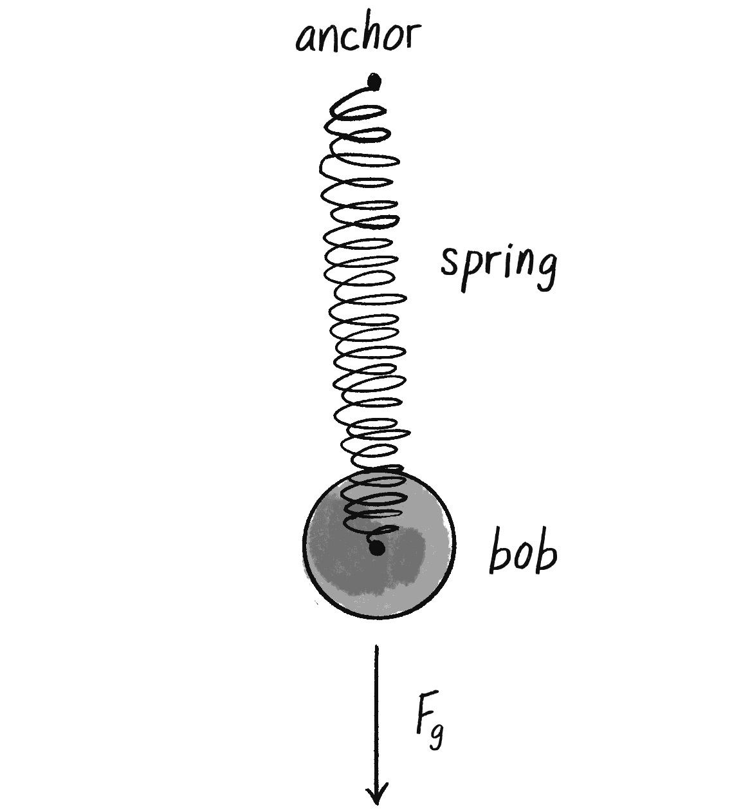
Досліджувати математику трикутників і хвиль було чудово, але можливо, ви почали сумувати за законами руху Ньютона та векторами. Зрештою, суть цієї книги — моделювання фізики рухомих тіл. У підрозділі «Властивості коливань» я змоделював простий гармонічний рух, відобразивши синусоїду на діапазон пікселів полотна. Вправа 3.7 пропонувала вам використати цей підхід із функцією sin(), щоб створити симуляцію з тягарцем, що висить на пружині. Однак таке швидке й поверхове рішення з одним рядком коду не підійде, якщо ви дійсно хочете, щоб тягарець, що висить на пружині, реагував на інші сили свого середовища (вітер, гравітацію тощо). Щоб досягти такої симуляції, вам потрібно змоделювати силу пружності за допомогою векторів.
Я розглядатиму пружину як з’єднання між рухомим тягарцем і нерухомою опорною точкою, інакше кажучи, опорою чи якорем (див. рисунок 3.14).

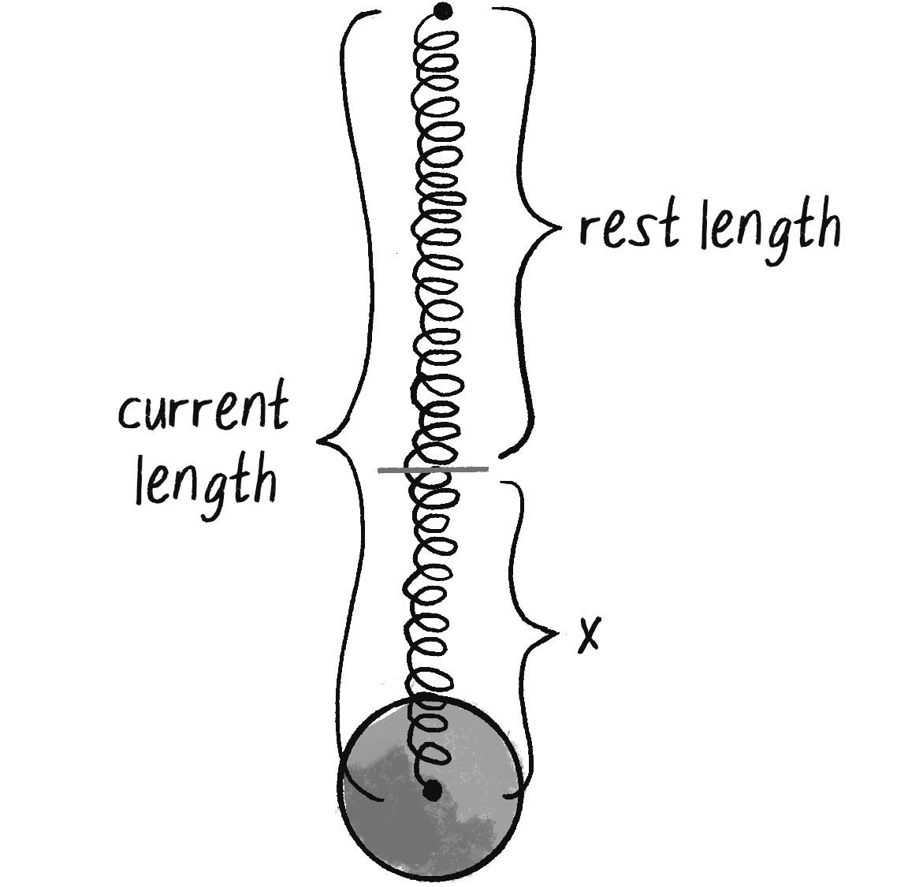
Сила пружності — це вектор, обчислений згідно із законом Гука, названим на честь Роберта Гука, британського фізика, який сформулював цю закономірність у 1660 році. Гук спочатку виклав закон латинською мовою: «Ut tensio, sic vis», або «Який розтяг, така й сила». Подумайте про це так:
Сила пружності прямо пропорційна видовженню пружини.
Видовження є мірою того, наскільки пружина була розтягнута або стиснута: як показано на рисунку 3.15, це різниця між поточною довжиною пружини та її довжиною у стані спокою (її станом рівноваги). Отже, закон Гука стверджує, що якщо ви сильно тягнете за тягарець, то сила пружності буде великою, а якщо тягнете слабко — малою.
Математично закон виражається так:
Тут — це коефіцієнт жорсткості. Його значення масштабує силу, встановлюючи, наскільки еластичною або жорсткою є пружина. Тим часом — це видовження, тобто поточна довжина мінус довжина у стані спокою.
Тепер згадайте, що сила — це вектор, тому вам потрібно обчислити і його величину, і його напрямок. Для коду я почну з наступних трьох змінних: двох векторів для положення опори й тягарця та однієї змінної для довжини у стані спокою:
let anchor = createVector(0, 0);
let bob = createVector(0, 120);
let restLength = 100;
Вибір довільних значень для положень і довжини у стані спокою.
Далі я використаю закон Гука для обчислення величини сили. Для цього мені потрібні k і x. Обчислити k легко — це просто константа, тож я вигадаю її значення:
let k = 0.1;
Знайти x, можливо, дещо складніше. Мені потрібно знати різницю між поточною довжиною пружини та її довжиною у стані спокою. Довжина у стані спокою визначена у змінній restLength. А яка ж поточна довжина? Відстань між точкою підвісу і тягарцем. І як я можу обчислити цю відстань? Як щодо магнітуди вектора, який вказує від опори до тягарця? Зауважте, що це точно такий самий процес, який я застосовував для визначення відстані між об’єктами з метою обчислення гравітаційного притягання у Розділі 2.
let dir = p5.Vector.sub(bob, anchor);
Вектор, що вказує від опори до тягарця, дає вам поточну довжину пружини.
let currentLength = dir.mag();
let x = currentLength - restLength;
Тепер, коли я з’ясував складники, необхідні для визначення величини сили (), мені потрібно з’ясувати напрямок сили — одиничний вектор, спрямований у напрямку її дії. Хороша новина полягає в тому, що я вже маю цей вектор. Правильно? Щойно я поставив запитання: «Як я можу обчислити цю відстань?» і відповів: «Як щодо магнітуди вектора, який вказує від опорної точки до тягарця?». Так ось, цей вектор якраз і описує напрямок сили!
На рисунку 3.16 показано, що якщо ви розтягнете пружину понад її довжину у стані спокою, має виникнути сила, яка тягнутиме її назад до опори. А якщо пружина стискається менше за її довжину спокою, сила повинна відштовхувати її від опори. Формула закону Гука враховує цю зміну напрямку множником -1.

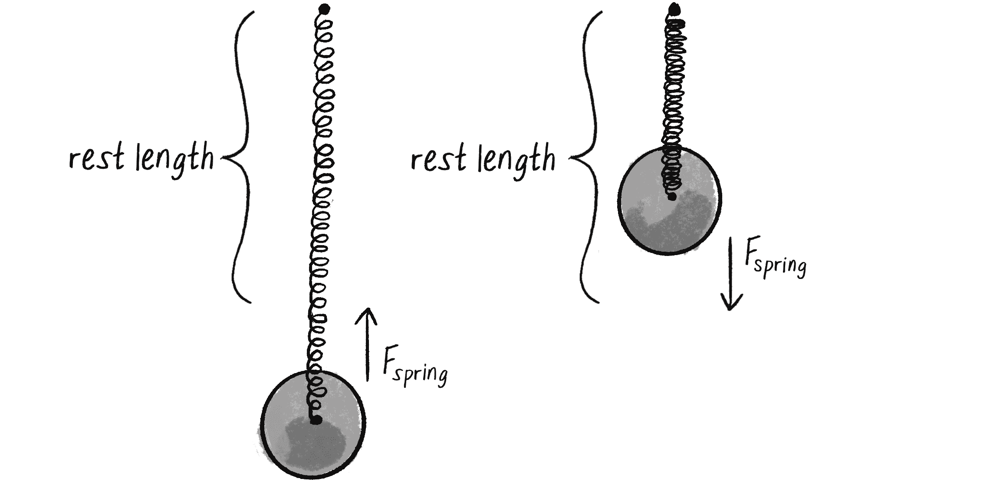
Зараз мені потрібно лише встановити магнітуду вектора, яка використовується для обчислення відстані. Погляньмо на код і перейменуймо цю векторну змінну на force:
let k = 0.1;
let force = p5.Vector.sub(bob, anchor);
let currentLength = force.mag();
let x = currentLength - restLength;
Магнітуда сили пружності згідно із законом Гука.
force.setMag(-1 * k * x);
Поєднуємо все разом: напрямок і магнітуду!
Тепер, коли я маю алгоритм для обчислення сили пружності, залишається питання: яку структуру ООП мені слід обрати? Це одна з тих ситуацій, де немає єдиної правильної відповіді. Існує кілька варіантів, і вибір залежить від моїх цілей та особистого стилю кодування.
Оскільки я від початку працював із класом Mover, я дотримуватимуся цієї ж структури. Я думатиму про клас Mover як про тягарець на пружині. Тягарцю для переміщення полотном потрібні вектори position, velocity та acceleration. Ідеально — у мене все це вже є! І можливо, тягарець також відчуває силу тяжіння за допомогою методу applyForce(). Залишається лише один крок до застосування сили пружності:
let bob;
function setup() {
bob = new Bob();
}
function draw() {
let gravity = createVector(0, 1);
bob.applyForce(gravity);
Вигадана сила тяжіння з Розділу 2.
let springForce = _______________????
bob.applyForce(springForce);
Також мені потрібно розрахувати і застосувати силу пружності!
bob.update();
bob.show();
Стандартні методи update() і show().
}
Як варіант, можна було б записати весь код сили пружності в основній функції draw(). Але думаючи наперед про випадок, коли у вас буде кілька тягарців і пружинних з’єднань, мудрим рішенням буде створити додатковий клас — Spring. Як показано на рисунку 3.17, клас Bob відстежує рух тягарця, а клас Spring відстежує положення опори пружини, її довжину у стані спокою та обчислює силу пружності для тягарця.

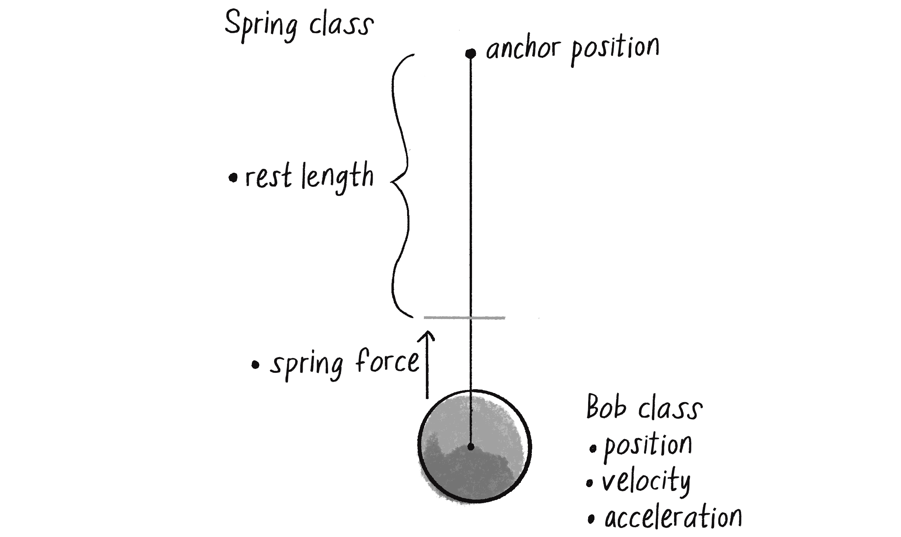
Spring має опертя й довжину у спокої. Клас Bob має положення, швидкість і прискоренняЦе дозволяє мені написати чудову програму наступного вигляду:
let bob;
let spring;
Додаємо об’єкт Spring.
function setup() {
bob = new Bob();
spring = new Spring();
}
function draw() {
let gravity = createVector(0, 1);
bob.applyForce(gravity);
spring.connect(bob);
Цей новий метод у класі Spring подбає про обчислення сили, якою пружина діє на тягарець.
bob.update();
bob.show();
spring.show();
}
Подумайте про те, як це можна порівняти з моєю першою спробою з гравітаційним притяганням у прикладі 2.6, коли я мав окремі класи Mover і Attractor. Там я написав щось на зразок:
let force = attractor.attract(mover);
mover.applyForce(force);
Аналогічна ситуація з пружиною могла б бути такою:
let force = spring.connect(bob);
bob.applyForce(force);
Натомість у цьому прикладі я маю таке:
spring.connect(bob);
Що це дає? Чому мені не потрібно викликати applyForce() для тягарця? Відповідь, звісно ж, полягає в тому, що мені потрібно викликати applyForce() для тягарця. Просто замість того, щоб робити це у функції draw(), я демонструю, що цілком прийнятною (а подекуди й кращою) альтернативою є попросити метод connect() викликати applyForce() для тягарця всередині себе:
connect(bob) {
let force = якісь хитромудрі обчислення
bob.applyForce(force);
Метод connect() піклується про виклик applyForce() і тому йому не потрібно повертати вектор в область виклику.
}
Навіщо робити це по-одному із класом Attractor, а по-іншому з класом Spring? Коли я вперше обговорював сили, було наочніше показати все їхнє застосування у функції draw(), і це допомогло вам зрозуміти ідею накопичення або акумуляції сил. Тепер, коли все стало зрозумілішим, можливо, простіше інкапсулювати деякі деталі всередині самих об’єктів.
Розглянемо решту елементів у класі Spring.
class Spring {
constructor(x, y, length) {
Конструктор ініціалізує точку опори та довжину у стані спокою.
this.anchor = createVector(x, y);
Положення опори пружини.
this.restLength = length;
this.k = 0.2;
Змінні для довжини у спокої та коефіцієнта жорсткості.
}
connect(bob) {
Обчислення сили пружини на основі закону Гука.
let force = p5.Vector.sub(bob.position, this.anchor);
Отримання вектора, що вказує від опори до положення тягарця.
let currentLength = force.mag();
let stretch = currentLength - this.restLength;
Обчислення зміщення між поточною довжиною і довжиною спокою. Для більшої наочності я використаю назву змінної stretch замість x.
force.setMag(-1 * this.k * stretch);
Напрямок і магнітуда разом!
bob.applyForce(force);
Виклик методу applyForce() усередині методу connect!
}
show() {
fill(127);
circle(this.anchor.x, this.anchor.y, 10);
}
Малювання опори.
showLine(bob) {
stroke(0);
Малювання пружинного з’єднання між положенням тягарця і опори.
line(bob.position.x, bob.position.y, this.anchor.x, this.anchor.y);
}
}
Повний код цього прикладу доступний на вебсайті книги й містить дві додаткові можливості: по-перше клас Bob включає методи для взаємодії з курсором, що дозволяють перетягувати тягарець у вікні, і по-друге клас Spring включає метод для обмеження довжини з’єднання між мінімальним та максимальним значеннями.
Вправа 3.13
Перш ніж переглядати приклад онлайн, подивіться на цей метод constrainLength() і спробуйте заповнити пропуски:
constrainLength(bob, minlen, maxlen) {
let direction = p5.Vector.sub(bob.position, this.anchor);
Вектор, що вказує від тягарця до опори.
let length = direction.mag();
if (length < minlen) {
Чи не занадто коротка довжина?
direction.setMag(minlen);
bob.position = p5.Vector.add(this.anchor, direction);
Утримання положення в межах обмеження.
bob.velocity.mult(0);
} else if (length > maxlen) {
Чи довжина не занадто велика?
direction.setMag(maxlen);
bob.position = p5.Vector.add(this.anchor, direction);
Утримання положення в межах обмеження.
bob.velocity.mult(0);
}
}
Вправа 3.14
Створіть систему з кількох тягарців і пружинних з’єднань. Як щодо з’єднання тягарця з іншим тягарцем без фіксованої опори?
Маятник


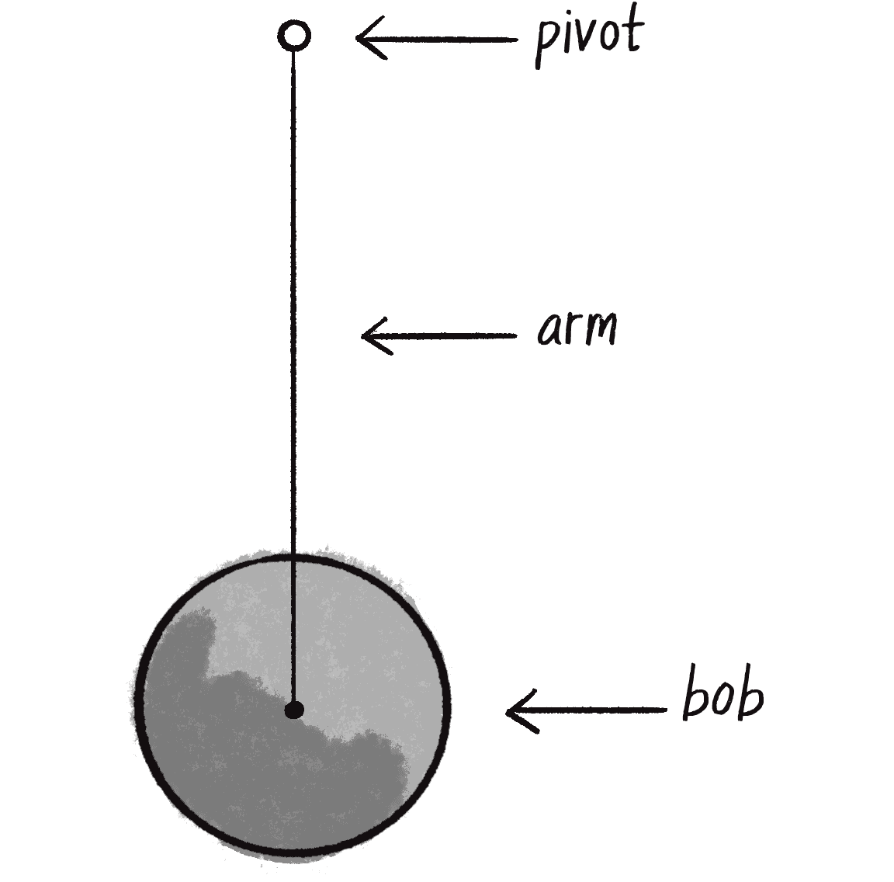
Ви могли помітити, що в коді прикладу 3.10 я жодного разу не використав синус чи косинус. Перш ніж списати всю цю тригонометрію як щось другорядне, дозвольте мені показати приклад того, як це все поєднується разом. Уявіть собі тягарець, підвішений до опори на пружині з абсолютно жорстким з’єднанням, яке не можна ні стиснути, ні розтягнути. Цей ідеалізований сценарій описує маятник і надає чудову нагоду потренуватися в поєднанні всього, що ви дізналися про сили та тригонометрію.
Маятник — це тягарець, підвішений на плечі до точки підвісу (яку раніше в прикладі з пружиною я називав опорою — anchor). У стані спокою маятник висить вертикально вниз, як показано на рисунку 3.18. Однак якщо відхилити маятник під кутом відносно стану спокою і відпустити його, він почне гойдатися вперед і назад, описуючи дугу. У реальному світі маятник рухався б у тривимірному просторі, але я розгляну простіший сценарій: маятник у 2D-просторі полотна p5.js. Рисунок 3.19 зображує маятник у відхиленому положенні разом із діючими силами: гравітацією та натягом.
Коли маятник гойдається, його плече й тягарець, по суті, обертаються навколо нерухомої точки підвісу. Якби плече не з’єднувало тягарець і точку підвісу, тягарець просто впав би на землю під дією гравітації. Зрозуміло, що цього не відбувається. Натомість фіксована довжина плеча створює другу силу — силу натягу. Втім, я не буду моделювати цей рух через ці сили, принаймні не так, як у випадку з пружиною.

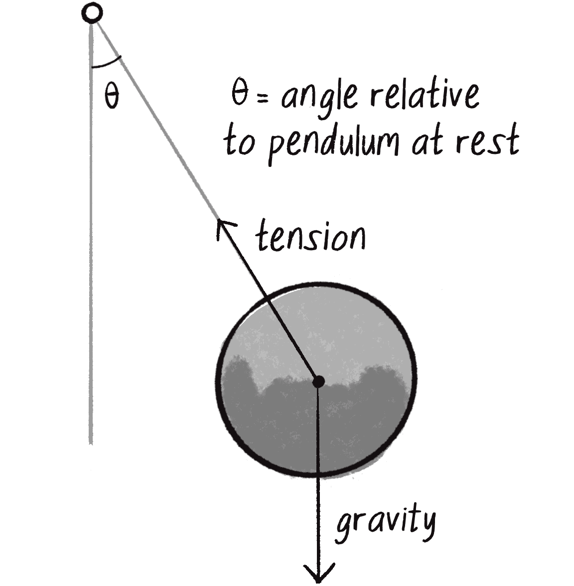
Замість використання лінійних прискорення та швидкості я опишу рух маятника через кутове прискорення та кутову швидкість, які стосуються зміни кута плеча відносно положення спокою маятника. Мушу спершу попередити вас, особливо якщо ви досвідчений фізик, що для зручності я знехтую тут кількома важливими концепціями: збереженням енергії, імпульсом, доцентровою силою тощо. Цей опис фізики маятника не претендує на вичерпність. Моя мета — надати вам нагоду попрактикувати щойно здобуті знання з тригонометрії та глибше дослідити зв’язок між силами й кутами на конкретному прикладі.
Щоб обчислити кутове прискорення маятника, я використаю другий закон руху Ньютона, але з невеликою тригонометричною родзинкою. Погляньте на рисунок 3.19 і нахиліть голову так, щоб плече маятника стало вертикальною віссю. Сила тяжіння раптом буде спрямована навскіс, трохи ліворуч — під кутом до вашої нахиленої голови. Якщо від цього у вас починає боліти шия, не хвилюйтеся, я перемалюю зображення під нахилом та позначу сили як для сили тяжіння і для сили натягу (рисунок 3.20, ліворуч).
Розкладімо тепер вектор сили тяжіння на - та -компоненти, де плече є новою віссю . Ці компоненти утворюють прямокутний трикутник із силою тяжіння як гіпотенузою (рисунок 3.20, праворуч). Я називатиму їх і , але що ці компоненти означають? Компонента представляє силу, протилежну до — сили натягу. Пам’ятайте, що саме сила натягу утримує тягарець від падіння.
Інша компонента, , перпендикулярна до плеча маятника, і це саме та сила, яку я весь час шукав! Вона змушує маятник коливатися. Коли маятник гойдається, вісь (тобто плече) завжди перпендикулярна до напрямку руху. Тому я можу знехтувати силою натягу та і зосередитися на , яка є сукупною силою у напрямку руху. А оскільки ця сила є частиною прямокутного трикутника, я можу обчислити її за допомогою... як ви здогадалися, тригонометрії!

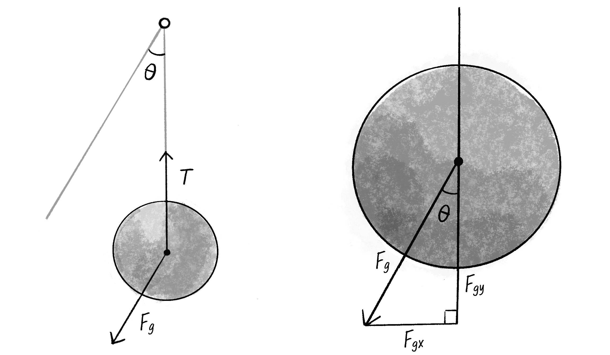
Ключовим тут є те, що верхній кут прямокутного трикутника такий самий, що і кут між плечем маятника та його положенням у спокої. Так само як було продемонстровано в обговоренні полярних координат, функції синуса та косинуса дозволяють мені відокремити компоненти сили тяжіння (гіпотенузу) відповідно до цього кута. Для мені потрібно використовувати синус:
Розв’язуючи , я отримую таке рівняння:
Зараз я перейменую цю силу на — силу маятника. На рисунку 3.21 я повернув діаграму до початкового положення та оновив позначення компонент. Я також переніс початок вектора від нижньої точки прямокутного трикутника до центру тягарця, щоб показати, як ця сила рухає тягарець.
Ось вона. Рівнодійна сила маятника, яка спричиняє обертання, обчислюється так:

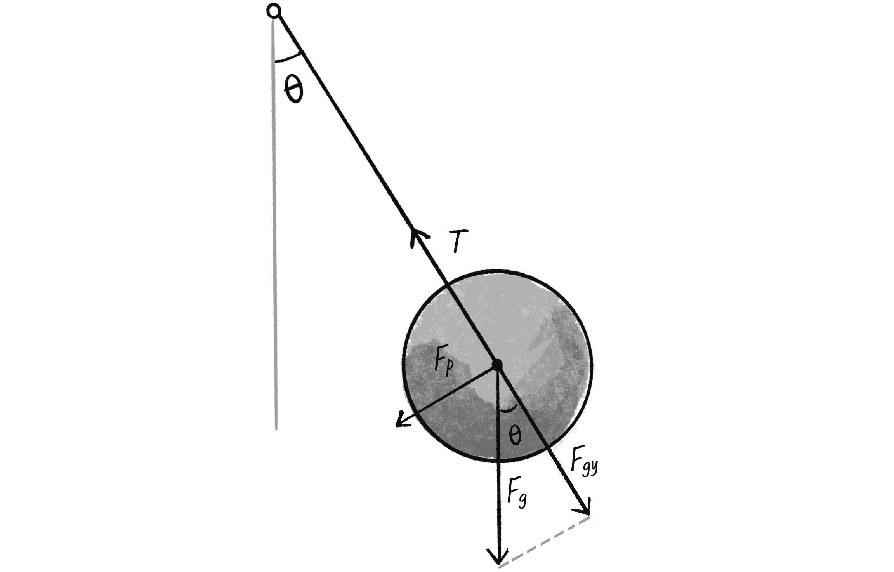
Щоб ви не забули: моя мета — визначити кутове прискорення маятника. Отримавши його, я зможу застосувати закони руху для обчислення нового кута для кожного кадру анімації:
Добра новина полягає в тому, що другий закон Ньютона встановлює співвідношення між силою та прискоренням, а саме , або . Отже, якщо сила маятника дорівнює силі тяжіння, помноженій на синус кута, тоді маємо:
Тут доречно нагадати, що ми перебуваємо в контексті креативного програмування, а не фундаментальної фізики. Так, прискорення вільного падіння на Землі становить 9,8 м/с². Але це число не має практичного значення у світі пікселів. Натомість я використаю довільну сталу (змінну gravity), яка масштабує прискорення (до речі, кутове прискорення зазвичай позначають грецькою літерою , щоб відрізнити його від лінійного прискорення ):
Перш ніж зібрати все докупи, зазначу ще одну деталь, про яку я не згадав. А точніше — безліч дрібних деталей. Подумайте на мить про плече маятника. Це металевий стрижень? Мотузка? Гумова стрічка? Як воно закріплене в точці підвісу? Яка його довжина? Яка маса? Чи на вулиці вітряно? Я міг би й далі ставити запитання, які вплинули б на симуляцію. Втім, я обираю ідеалізований світ, де плече маятника — це стрижень, який ніколи не згинається, а маса тягарця зосереджена в єдиній нескінченно малій точці.
Попри те що я волію не переобтяжувати себе цими питаннями, у розрахунку кутового прискорення все одно бракує важливої складової. Щоб спростити виведення формули кутового прискорення маятника, я припустив, що довжина плеча дорівнює 1. Насправді ж довжина плеча маятника впливає на його прискорення через такі поняття, як крутний момент і момент інерції.
Крутний момент (або , читається як тау) є мірою обертальної сили, що діє на тіло. У випадку маятника крутний момент пропорційний як масі тягарця, так і довжині плеча (). Момент інерції (або ) маятника є мірою того, наскільки важко обертати маятник навколо точки підвісу. Він пропорційний масі тягарця і квадрату довжини плеча ().
Пам’ятаєте другий закон Ньютона: ? Він має свій обертальний аналог: . Якщо виразити звідси кутове прискорення , отримаємо . Після подальшого спрощення маємо або . Кутове прискорення не залежить від маси маятника!
Це точнісінько як у досліді Галілея з падінням тіл із Пізанської вежі для демонстрації лінійного прискорення, де різні предмети падали з однаковою швидкістю незалежно від їхньої маси. Тут маса тягарця знову не впливає на кутове прискорення — має значення лише довжина його плеча. Отже, остаточна формула має такий вигляд:
Дивовижно! Зрештою формула виявилася настільки простою, що ви можете запитати, навіщо було так довго її пояснювати? Звісно, вчитися корисно, але я міг би просто сказати: «Кутове прискорення маятника дорівнює сталій, помноженій на синус кута та поділеній на довжину плеча». Проте це означало б упустити суть. Мета цієї книги — не вивчити, як хитається маятник чи працює гравітація. Суть полягає в тому, щоб навчитися творчо мислити про те, як фігури можуть рухатися на екрані в обчислювальній графічній системі. Маятник — це лише показовий приклад. Якщо ви зрозумієте підхід до програмування маятника, то зможете застосувати ті самі прийоми й в інших ситуаціях, хоч би яким ви задумали свій світ на полотні p5.js.
Але це ще не все. Мені може дуже подобатися моя проста й елегантна формула для кутового прискорення, але її ще треба втілити в коді. Це чудова нагода попрактикувати навички ООП і створити клас Pendulum. Спершу пригадайте всі властивості маятника, які я назвав:
- Довжина плеча
- Кут
- Кутова швидкість
- Кутове прискорення
Клас Pendulum також потребує всіх цих властивостей:
class Pendulum {
constructor() {
this.r = ????;
Довжина плеча.
this.angle = ????;
Кут плеча маятника.
this.angleVelocity = ????;
Кутова швидкість.
this.angleAcceleration = ????;
Кутове прискорення.
}
Далі мені потрібно написати метод update() для оновлення кута маятника відповідно до формули:
update() {
let gravity = 0.4;
Довільна константа.
this.angleAcceleration = -1 * gravity * sin(this.angle) / this.r;
Обчислення прискорення за формулою.
this.angleVelocity += this.angleAcceleration;
Збільшення швидкості.
this.angle += this.angleVelocity;
Збільшення кута.
}
Зауважте, що в обчисленні прискорення тепер присутнє множення на –1. Коли маятник перебуває праворуч від свого положення рівноваги (спокою), кут є додатним, і синус кута також додатний. Проте сила тяжіння повинна повертати тягарець назад до положення рівноваги. І навпаки: коли маятник перебуває ліворуч від положення рівноваги, кут є від’ємним, і його синус також від’ємний. У такому разі повертальна сила має бути додатна. Множення на –1 необхідне в обох випадках.
Далі мені потрібен метод show(), щоб намалювати маятник на полотні. Але де саме я маю його намалювати? Як розрахувати декартові -координати для точки підвісу маятника (назвемо її pivot) і положення тягарця (назвемо його bob)? Можливо, це вже трохи набридло, але відповідь знову та сама — тригонометрія, як показано на рисунку 3.22.

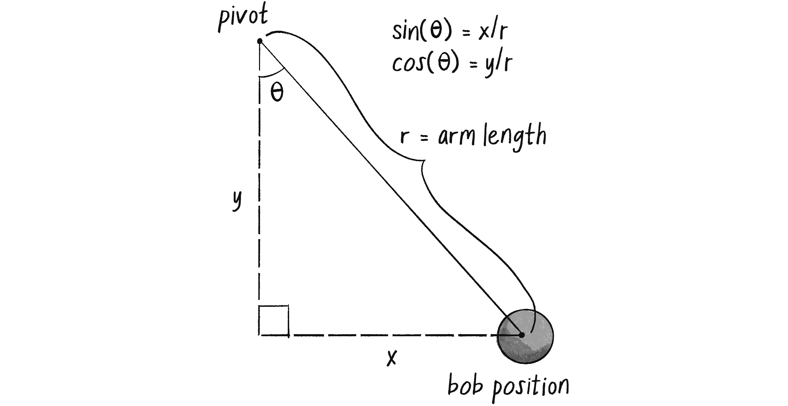
Спершу мені потрібно додати властивість this.pivot до конструктора, щоб указати, де саме зображати маятник на полотні:
this.pivot = createVector(100, 10);
Я знаю, що тягарець має перебувати на певній відстані від точки підвісу, яка визначається довжиною плеча. Це моя змінна r, значення якої я зараз і встановлю:
this.r = 125;
Я також знаю поточний кут відхилення тягарця відносно точки підвісу: він зберігається у змінній angle. Маючи довжину плеча та кут, я маю полярні координати тягарця: . Проте насправді мені потрібні декартові координати, і, на щастя, я вже знаю, як за допомогою синуса й косинуса перейти від полярних координат до декартових:
this.bob = createVector(r * sin(this.angle), r * cos(this.angle));
Зверніть увагу, що я використовую sin(this.angle) для значення і cos(this.angle) для . Це протилежно до того, що я показував у підрозділі «Полярні та декартові координати» раніше в цьому розділі. Річ у тім, що тепер я шукаю верхній кут прямокутного трикутника, спрямованого донизу, як показано на рисунку 3.18. Цей кут лежить між віссю і гіпотенузою, а не між віссю і гіпотенузою, як ви бачили раніше на рисунку 3.9.
Зараз значення this.bob розраховане з припущенням, що точка підвісу розташована в точці . Щоб отримати положення тягарця відносно точки підвісу, хай де вона перебуває, я можу просто додати вектор pivot до вектора bob:
this.bob.add(this.pivot);
Тепер залишилася дрібниця: намалювати лінію та круг:
stroke(0);
fill(127);
line(this.pivot.x, this.pivot.y, this.bob.x, this.bob.y);
circle(this.bob.x, this.bob.y, 16);
Звісно, справжній маятник зазнаватиме певного тертя (у точці підвісу) та опору повітря. У поточному варіанті з цим кодом маятник коливатиметься вічно. Щоб зробити рух реалістичнішим, я можу сповільнювати коливання маятника за допомогою трюку «згасання» (демпфування). Я називаю це трюком, оскільки замість моделювання сил опору з фізичною точністю (як у розділі 2), подібного результату можна досягти, просто зменшуючи кутову швидкість на певну величину під час кожного кадру анімації. Наведений код зменшує швидкість на 1 відсоток (тобто множить її на 0.99) щокадру:
this.angleVelocity *= 0.99;
Зібравши все разом, я маю наступний приклад (з маятником із початковим кутом у 45 градусів).
let pendulum;
function setup() {
createCanvas(640, 240);
pendulum = new Pendulum(width / 2, 0, 175);
Створення нового об’єкта Pendulum із заданим положенням і довжиною плеча.
}
function draw() {
background(255);
pendulum.update();
pendulum.show();
}
class Pendulum {
constructor(x, y, r) {
this.pivot = createVector(x, y); // Положення точки підвісу
this.bob = createVector(); // Положення тягарця
this.r = r; // Довжина плеча
this.angle = PI / 4; // Кут плеча
this.angleVelocity = 0; // Кутова швидкість
this.angleAcceleration = 0; // Кутове прискорення
this.damping = 0.99; // Довільне згасання
this.ballr = 24; // Довільний радіус тягарця
Багато змінних для відстеження різних властивостей маятника.
}
update() {
let gravity = 0.4;
this.angleAcceleration = (-1 * gravity / this.r) * sin(this.angle);
Формула кутового прискорення.
this.angleVelocity += this.angleAcceleration;
this.angle += this.angleVelocity;
Стандартний алгоритм кутового руху.
this.angleVelocity *= this.damping;
Застосування згасання.
}
show() {
this.bob.set(this.r * sin(this.angle), this.r * cos(this.angle));
this.bob.add(this.pivot);
Перетворення полярних координат у декартові. Замість того щоб щоразу створювати новий вектор, я використовую метод set(), щоб оновити його значення і відповідно положення тягарця.
stroke(0);
line(this.pivot.x, this.pivot.y, this.bob.x, this.bob.y);
Плече.
fill(127);
circle(this.bob.x, this.bob.y, this.ballr * 2);
Тягарець.
}
}
На вебсайті книги цей приклад містить додатковий код, який дозволяє вхопити маятник і розгойдувати його курсором мишки.
Вправа 3.15
З’єднайте кілька маятників у ланцюг так, щоб тягарець одного був точкою підвісу для іншого. Зауважте, що це може дати цікаві візуальні результати, проте буде фізично дуже неточним. Симуляція справжнього подвійного маятника потребує складних математичних рівнянь. Ви можете прочитати про них у статті Wolfram Research про подвійний маятник або переглянути моє відео про програмування подвійного маятника.
Вправа 3.16

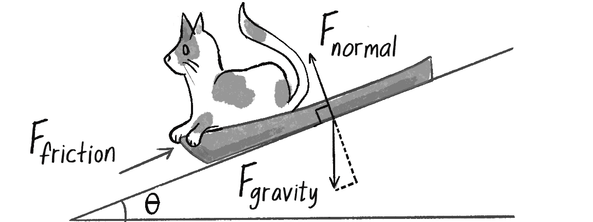
Як за допомогою тригонометрії обчислити величину нормальної сили (сили нормальної реакції опори), зображеної на цьому рисунку (сили, перпендикулярної до схилу, на який спираються санчата)? Можете вважати величину відомою сталою. Для початку знайдіть прямокутний трикутник. Зрештою, нормальна сила рівна за величиною і протилежна за напрямком одній із компонент сили тяжіння. Якщо це допоможе, намалюйте поверх схеми додаткові прямокутні трикутники!
Вправа 3.17
Створіть симуляцію коробки, що ковзає вниз по похилій площині із тертям. Зверніть увагу: величина сили тертя пропорційна силі нормальної реакції опори, як обговорювалося в попередній вправі.
Проєкт «Екосистема»
Візьміть одну зі своїх істот і додайте коливальний рух до її поведінки. За зразок можна взяти клас Oscillator із прикладу 3.7. Однак об’єкт Oscillator коливався навколо єдиної фіксованої точки (центра вікна). Спробуйте змусити істоту коливатися навколо рухомої точки.
Іншими словами, створіть істоту, яка переміщується екраном відповідно до положення, швидкості та прискорення. Проте ця істота — не просто статична фігура, а тіло, що коливається. Подумайте про те, щоб пов’язати частоту або швидкість коливань зі швидкістю руху. Уявіть помахи крил метелика чи перебирання лапок комахи. Чи вдасться вам створити враження, ніби внутрішня механіка істоти (коливання) рухає її вперед? Завітайте на вебсайт книги, щоб переглянути додатковий приклад поєднання сили притягання з розділу 2 із коливальним рухом.

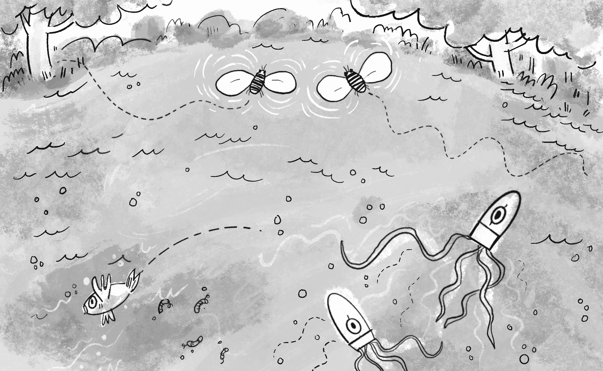